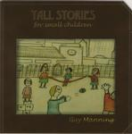

Home Artist links Label link

| Artist: | Guy Manning |
| Title: | Tall Stories For Small Children |
| Label: | Cyclops CYCL 078 |
| Length(s): | 69 minutes |
| Year(s) of release: | 1999 |
| Month of review: | 01/2000 |
Line up
Tracks
| 1) | The Last Psalm | 14.07
|
| 2) | The Voyager | 5.22
|
| 3) | White Waters | 5.46
|
| 4) | The Candyman | 7.07
|
| The fall and rise of Abel Mann?
|
| 5) | Grand Fanfare | 2.02
|
| 6) | Waiting On A Ledge | 4.42
|
| 7) | Grand Fanfare (reprise) | 0.43
|
| | Post-mortem |
|
| | 8) 3 Score Years And 10 | 2.18
|
| | 9) In My Life | 5.06
|
| 10) | Castaway | 4.25
|
| Holy Ireland
|
| 11) | The Land | 2.40
|
| 12) | A Soldier's Story | 3.21
|
| 13) | The Widow's Tale | 4.42
|
| 14) | Priest's Song | 4.01
|
| 15) | The Land (reprise) | 2.58
|
Summary
From Gold Frankincense And Diskdrive, now back with Parallel Or 90 Degrees
and a solo album out. Bust times for Guy Manning who with a little help from
his friends (and family) releases his first solo album.
The music
The album opens with the epic The Last Psalm. Somewhere Over The Rainbow
resounds out of the radio in a mid-fifties version. A gale is blowing and
church bells are sounding. It's christmas time one might say. Some organ,
punctuating percussion and rather slow singing. The music owes quite a bit
too Pink Floyd but is more singersongwritewrish. Maybe the correct reference
here is the Rick Wright solo-album. Then we come to the second part, Windows.
This is a rustic piece with tinkling sounds and whispered vocals. The comes
beacon with its melodic, sad melodies and suddenly the sun seems to come out
as me move into the hairraising reprise of the first part, Last Psalm.
The vocals of Manning are quite strong, especially when he sings a bit louder.
the following three tracks are of more standard length: the first of these
is The Voyager in which the acoustic guitars figures a lot. The music reminds
me at first of Roy Harper (Burn The World), but there are some Turkish
sounding interludes. White Waters is up next, a rather subdued track with
low noisy guitars. The music sounds a bit eighties, probably because of the
keyboards. Not very progressive this, more up the alley of solo Geoff Mann
and Rog Patterson and the few names I've already mentioned. In addition,
like those artists, the lyrics are quite important. The Candyman is a rather
straightforward friendly acoustic track. Rather long though.
The next epic is The Fall And Rise Of Abel Mann. The opening is clear singing
with piano with a good melody. The next part is Waiting On A Ledge which
features acoustic guitar, but later the organ sets in in the background and
we get some playful keyboards and ehm harmonica? It all stays a bit laidback
though. After a reprise of melodramatic Grand Fanfare we enter the Post-Mortem
which is divided in again two parts. The first part is a bit Floydian with
softly bluesy guitar work and nice bass work. The final part is In My Life,
a very nice acoustic piece with good melodies.
Castaway is the last short piece. It is again very melodic with some orchestral
ingredients in the middle to lighten up this mainly acoustic track.
The last track is Holy Ireland, almost 18 minutes long and in five separate
parts. Maybe more a collection of songs under the same umbrella and
encapsulated between The Land and The Land (reprise). The Land itself is
a peaceful but powerful track with mainly keyboards. A Soldier's Story is
an fast paced acoustic piece. The vocals are very good here. In my opinion
the piece is the best since the opening track. The Widow's Tale is a sadder
piece, again acoustic with a low humming bass. The Priest's Song is part
merrily folky, but also has a great chorus. Some organ and military drums are
thrown in for good measure. The synthetic strings, the organ and the nice
spaceous guitar solo of the Reprise of The Land round the album off well.
When I played this album a bit loud, it turned out to be relatively noisy.
Conclusion
This is not typically progressive. Sure, there are some ingredients, but
instead of the all-too-familiar names such as Genesis, you'll hear Roy Harper
here, and Geoff Mann and Rog Patterson. This means singersongwriter music, but
more tailored to a progressive audience. Interesting, personal lyrics round
it all of. There are some epic tracks here, but do not expect long instrumental
meanderings, loud keyboard or guitar solos or complex signature changes: they
are not here. There are some good honest compositions here though with
best (and coincidently the most progressive and longest) songs being the first
and last.
© Jurriaan Hage